日々、想ふ
〜過去感じたことがつれづれと〜
（できるだけ最大化してお読みください）
日々、想ふ
心の奥。１１/１５
昨日の日記で話した「OH!MYコンブ」。
友達が古本屋で一冊買ってきた。
授業の合間に読んでたんだけど、
もうね、
やべえ、超やべえ。
いやマンガは
大しておもしろくないんだけど
なんていうか懐かしさがすっごいこみ上げてきて
今までにはない感覚でマンガ読んでました、授業中に。
このマンガを知らない人のために簡単に説明しとくと
主人公のコンブ(海草ではない、人間)がおもに駄菓子を使って
ちょっとした料理を作るっていう料理マンガ。
そんなわけで今日はそのマンガに出てきた料理を
参考にこのマンガでいうリトルグルメを作ってみました。
まずお餅の上にチーズを乗せる。
次にお好みソースとマヨネーズをかけてトースターでチン。
できたのがこれ。
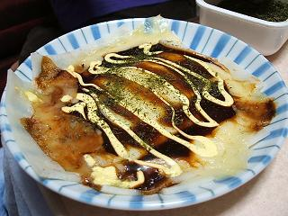
う〜ん、味は普通。ってかお好み焼きみたいな味。
別にリトルグルメっていうほどのもんでもなかったです、タケユキです。
先週写真を送ってもらったお礼を言うために
今日
三丁目に電話、
おばちゃんに替わってもらってお礼を言う。
最近の話をしてみたり、冬休み帰りますって伝えたり。
それから
三丁目と最近の話とかを
してたわけなんだけど
対人関係で病んでる（敢えてフラれたとかそういう書き方はしない）話をしてたら
受話器の向こうから
「ん？タケユキ君がどうかしたの？」
おばちゃんそういう話までは聞かないでえぇ。。
ここ数日の三丁目：俺以上に病んでる。
今日の家計簿：
| 「OH!MYコンブ」４巻 |
１５０円 |
| 支出計 |
１５０円 |
| 総支出 |
３３３９５円 |
動かない電化製品は。１１/１４
冷静に考えてみるとここ最近飲みの日はもちろん
家で一人でいるときもけっこうな確率で飲んでます、
タケユキです。
mp3プレイヤーが壊れました。
高３の正月ごろに買った７,８枚のアルバムくらいの曲数を
１枚のCDに焼いて聴くことのできるオーディオプレイヤー。
それ以来外出するときは常に行動をともにしてたmp3プレイヤー。
受験の時も、帰省の時、キャンプの時もカバンの中に入ってた。
外国行った時ももちろん一緒、カンボジアまで行ったmp3プレイヤー。
２年近くほぼ毎日数時間動いてた、外出してる時は常に聴いてたから。
それが先週末から調子が悪くなり、リモコンの液晶には
フタ開けてないのに「open」の文字。
ついに今日スイッチが入らなくなりました。
大学生活ほぼすべての思い出を共有したmp3プレイヤー。
まあ壊れたのはしょうがないから
生活費とは別の個人口座からお金下ろしてきて今日新しいやつ買ってきた。
壊れたmp3プレイヤー、今はもうゴミ箱の中。
紙くずとか空き缶と一緒にゴミ箱の中。
世の中思い出とか愛着とか、所詮そんなもん。
今日のうちのマンションのシステム：ゴミの分別はしなくていいんです。
今日の家計簿：
| CD-RW 5枚 |
７００円 |
| 接着剤 |
１９８円 |
| 食料・酒 |
１５８４円 |
| 支出計 |
２４８２円 |
| 総支出 |
３３２４５円 |
ほぼ半額。１１/１３
なんかコミックボンボンでやってた（今もやってるかは知らない）
へろへろくん
の話になって、
その話をしてた中の一人が
「この絵他でもなんか見たことがある」って言ってて、
調べたらこのマンガだってことが分かった。
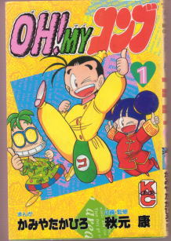
そうそう、俺もなぜか何冊か実家にあった、「OH！MYコンブ」。
たいてい駄菓子使って料理するんだよ確か、「OH！MYコンブ」。
んでもって明らかにおいしいかどうか微妙な料理食べて、
「オ〜マイコ〜ンブッ！」
とか言って
落ちそうなほっぺた押さえて飛び上がる、
そんな懐かしいマンガのことで３０分ほど話が続いた、タケユキです。
今日はバイトがあったんで梅田へ。
４日ぶりの梅田。たいして変わりこともなく。あたりまえか。
来週映画見る予定があったんで
バイト前にナビオによって先売指定券を買うためカウンターの列に並ぶ。
俺の番が来て映画と枚数を告げると店員さんが、
「お客様前売り券はお持ちですか？」
普段聞かれないようなことを聞かれた。
持ってなかったから「持ってないです」って答えたら
「あちらのグッズストアで前売り券を買われますと
通常購入されるよりお安くなります。
ただお買い上げいただいた前売り券を鑑賞券に交換するために
再度お並びいただくことになりますが・・」
バイトまで時間あったし安くなるならと
前売り券を買うためにグッズストアへ。
「すいません『ハウルの動く城』の前売り券２枚ください」
「２６００円になります」
学生なら１５００円のところが１３００円か。
まあ多少手間どってもこっちの方が安くていいや。
細かいお金がなかったんで５０００円札で払ったら、
「そしたらこちら前売り券と、３４００円のおつりになります」
え？
２６００円の買い物をして５０００円払ったら
おつりは２４００円じゃないの？
ちょっと混乱しながらおつりを受け取る。
レジのお姉さんも普段通りだし。電卓も使ってたし。
「どうしたんだろ？確かにおつり渡し間違えてるよな」
ずっと考えながらとりあえず鑑賞券と交換。
やっぱりどう考えても２４００円のはず。
これじゃ俺チケット二枚買って１６００円しか買ってないことになる。
一枚あたり８００円。
「あちらのグッズストアで前売り券を買われますと
通常購入されるよりお安くなります」
いや、安くなりすぎ。
今日の良心の呵責：いや、返すべきとは思ったんですよ。
今日の家計簿：
| 映画前売り券２枚 |
１６００円 |
| 三ツ矢サイダー1.5L |
１７８円 |
| 支出計 |
１７７８円 |
| 総支出 |
３０７６３円 |
影響されやすい性格。１１/１２
昨日の夜はうちでキムチ鍋してました。
俺は先月の終わりから眼鏡生活をしています。
うちにきてた友達の一人が
「自分そのダテ眼鏡けっこう似合うな〜」
ダテじゃないっすよちゃんと度入ってますよこれ、タケユキです。
そんなわけで昨日寝不足気味でした。
朝一限遅刻しなかったけど席座ってずっと寝てた。
二限空いてたから家帰ってちゃんと寝た。
そんな感じでけっこう寝まくりの一日。
夜は毎週金曜決まって塾講のバイトへ。
教えてる高校二年生の子が今週修学旅行で沖縄行ってたみたいで
お土産をいろいろもらった。
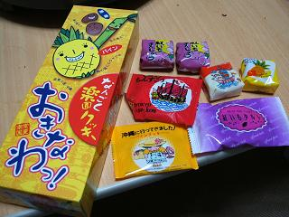
青い海、白い砂浜、常夏の国、沖縄。
サトウキビ、紅イモ、ゴーヤ、食の宝庫、沖縄。
中学の修学旅行で行った街、沖縄。
そういえば中学以来沖縄に行ってないなぁ。
よし、冬休みは沖縄行こう。
今日の写真：
今週の一枚を更新。
今日の家計簿：
| ニッショー |
１２０１円 |
| 支出計 |
１２０１円 |
| 総支出 |
２８９８５円 |
プリッツとポッキーは食べた。１１/１１
今日夕方家のポストを開けてみたら今日も手紙が届いてました。
なんと
三丁目のおばちゃんからでした。
手紙の内容は今年の夏休み・春休みに帰省した時に
三丁目宅で撮った写真と手紙が入っていました。
わざわざ手紙ありがとうございます、
冬休み帰るときにはお土産買って帰ります、タケユキです。
木曜日の午前中はずっと実験の授業なんだけど
資料見てみても何やっていいかまったく分からず
周りにそういう質問できる友達がいないため
１、２限の間ずっと綾乃さんとメールしてた。
最近の近況報告をしてみたり冬休みの予定の話をしてみたり。
メールしてたら実験の時間終わってました。
結局この二時間授業に関することはなにもせず。
まあこんな日もあるもんだって。
そう言い聞かせてたら綾乃さんに
「ありか？」
とかいう冷静な突っ込みを入れられるこの始末。
今日学校へは席に座ってケータイいじってただけ。
ごめんおばちゃん、俺も三丁目
と同じで大ざっぱでいい加減みたいです。
今日のオチ：手紙にそう書いてありました。
今日の欲しいもの：心の切り替えスイッチが欲しい。
今日の家計簿：
| 鍋やった時のお金 |
１２６９円 |
| 鍋の未清算金 |
２０００円 |
| 支出計 |
３２６９円 |
| 総支出 |
２７７８４円 |
ほんとはもう見てるはず。１１/１０
今日学校帰りに家のポストを開けたらダイレクトメールが入ってました、
ヴィトンからでした。
ルイ・ヴィトンですよ
ルイ・ヴィトン。
ついに俺も上流貴族の仲間入りです、タケユキざます。
今日は昼からずっと学校で明日提出の実験のレポート書いてました。
夜の９時過ぎぐらいまで。
それから帰ってきてまたレポートの続き。
終わって１１時過ぎ。
今週来週とレポート・テストでしんどい日々が続きそうです。
なんで１１月とかこんな半端な時期に勉強せんといけんのだろ・・
もっと遊びたいのに。
USJ行きたい。
京都の紅葉巡りに行きたい。
映画「今、会いにゆきます」を見に行きたい。
分かる人だけ分かってくれたらいい、今日の更新でした。
今日の聞いた愚痴：俺の勝ちとか言ってんじゃねえよ。
今日の俺の愚痴：急遽キャンセルするのを世間では
ドタキャンといいます。
今日の家計簿：
| 晩ご飯 |
３８０円 |
| 支出計 |
３８０円 |
| 総支出 |
２４８９５円 |
なんだかんだで最近よく飲む。１１/９
レポート提出期限が迫ってます、タケユキです。
でも今日はバイトが入っているためレポートができません。
提出期限が一番差し迫ってるレポートは明後日だから
明日がんばればなんとかなるか〜とか思いながら
バイトへ行くため４時半に家を出発。
午後５時半、バイト先へ到着。
「あ、店長、おはようございます」
「あ、タケユキ、今日休んでいいで」
・・・・・・・・・
・・・・・・・・・
・・・・・・・・・
そういうのは先に言わんかい。
今日そんな忙しくないから別に人は足りてるらしい。
そんなこと言われてももう電車で梅田まで来てしもうたやんけ。
電話で言えばこんな時間の無駄にならずにレポートできたやんけ。
明らかに不服そうな顔してたら店長が、
「でも別に働いてもええで？」
って言ったけど俺は
「いえ、帰らせてもらいます、お疲れ様です」
即答。
あっという間に今日の予定なくなった。
もともと今日はバイトの予定だったんだから
別に今日レポートやらなくても
これからの予定に別に問題は起きないはず。
そう言い聞かせながらもイライラがたまっていたため
帰りに寄り道してDVD「ブラザーベア」買った。
それからサークルの友達に電話しまくって暇人集めて家で飲み会。
よし、明日レポートがんばろう。
今日の買ったDVD：春休みに映画館で見た。
今日の家計簿：
| 昼飯 |
３９０円 |
| DVD「ブラザーベア」 |
２９４０円 |
| 関西ウォーカー |
３４９円 |
| 酒・お菓子 |
７９０円 |
| 支出計 |
４４６９円 |
| 総支出 |
２４５１５円 |
充電期間終了。１１/８
学祭連休期間も今日でおしまい、
明日からはまた学校が始まります、タケユキです。
最後だってんでボーリングいってきた。
夏休みに地元でやって以来の久しぶりのボーリング。
最高スコア１２８。
うん、別にすごいわけじゃない、でも悪いわけじゃない。
そんな普通の休日になってしまいました。
それからボーリングやった後に友達んちで少し飲んだ。
テレビつけてぼーっと見てたら
月９ドラマの「ラストクリスマス」が始まった。
そういえばこのドラマ一話目だけ見てそれから続き見てないや。
そんなわけで全然話の流れが分からんかったけど
とりあえず見てたらもうすでにクリスマスを予感させるような
ライトアップされたツリーが出てきてみたりして・・
なんか久しぶりに思わず「うっは〜」とか言いたくなるドラマを見た。
もうすぐ本格的に冬・・・がんばろ、いろいろと。
今日のお知らせ：過去ログ・画像倉庫として「
どうか僕に愛の手を」をリンクに追加。
今日の家計簿：
| 電車賃 |
３００円 |
| ボーリング代 |
１２１０円 |
| 酒・お菓子 |
６３５円 |
| 支出計 |
２１４５円 |
| 総支出 |
２００４６円 |
まちかね祭〜三日目〜。１１/７
学祭で新札「野口英世」ゲットだぜ！
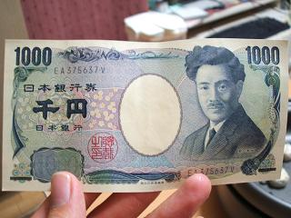
昔懐かしのポケモンの名台詞から今日の更新スタートです、タケユキです。
昼まで寝てて午後から最終日の学祭へ。
一日目、二日目、今日と三日も続けて行ったらさすがにやることがない。
ただ食べるだけ。
ただただ食べるだけ。
今日はのっぴきならない事件のためストレスがたまってたから
食べまくったろうと。
まあ知らない人がやってる店の前で愚痴るのもどうかと思ったから
友達がやってるところで愚痴ってた。
初日、二日目と食べたたこ焼きもどきのお店のとこに入り浸ってた。
よく考えたらそこのたこ焼きもどき食いまくってる。
学祭通算で６つ買ってた。
個人売り上げランキングではおそらくダントツトップ。
ちなみにたこ焼きもどきの値段はひとつ２００円で６個入り。
値段もまあそんなもんかな〜と思ってたんだけど
今日俺が買ったあとに１５０円に値下がってた。
閉店間際には１００円で８個入りになってた。
ちょっとへこんだ。
学祭のフィナーレには川嶋あいと安田大サーカス。
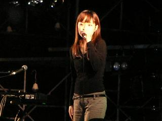
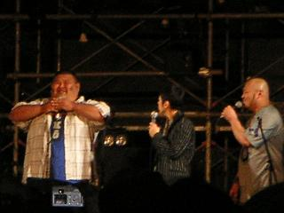
あんまり知ってる曲とかなかったけどよかった。
あんまり知ってるコントやってなかったからいいかどうか分からんかった。
ペットボトル一気飲みするやつやってくれんかったし。
そんな不完全燃焼だった学祭。
明日は学祭後の片付け日に割り当てられてるため明日も休み。
ボーリングにでも行ってストレス発散じゃあ！
今日の２番シアターLの１７番：この席には俺が座っているはずだった。
今日の家計簿：
| 学祭で使ったお金 |
３２０円 |
| 支出計 |
３２０円 |
| 総支出 |
１７９０１円 |
まちかね祭〜二日目〜。１１/６
学祭二日目ですよ、タケユキです。
今日は昨日よりちょっとはやめに１１時に学校へ。
学祭のイベントのひとつで「秋の健康フェスタ」を称して
健康診断を行ってる場所があるらしい。
大学に入ってからは定期的な健康診断とかないから
いい機会だってんで行ってきました。
会場に入ってみていろいろ測定してもらえることに驚き。
身長体重はもちろん骨強度とか血糖値まで測れるみたい。
せっかくなんで測りまくってきた、ただだし。
身長は１７０ｃｍちょうど、ついに、ついに念願の１７０台へ。
今までずっと１６９,９とかだったんで身長聞かれた時は
「ぎり１７０ない」
って答えてたのが
「１７０ちょうど」になるのがうれしくてしょうがない。
体重は知りたくなかったんで量らなかったけど。
血糖値、歯周病検査、１酸化炭素濃度測定（たばこ依存度）とかも
やってみたけど特に異常はなし。
２０歳になってはや半年強、これからは老化と戦うことになるんで
今の状態を知るために肌年齢も調べてもらった。
肌の張り「普通」、潤い「普通」、油分「普通」の肌年齢は２１歳でした。
・・１歳年とっとるやんけー。
一通り検査やって残るはこの検査最大の関心事、「頭皮チェック」。
なんかこのイベントのためにリーブ２１の人が来てるみたいだった。
さっそく申し込んで頭皮チェック。
画面にテレビのCMとかで見る毛穴の超拡大映像が現れた。
なんかすっごいテンションが下がった。
担当のお姉さんが、
「あぁ、この辺毛穴詰まってるね〜ここもだね〜」
一度もほめてくれなかった。
知ってた？シャンプーで頭洗う時間ってほんとにちゃんと洗ったら
４,５分くらいかかったりするんだって。
知ってた？リンスって頭皮につけずに髪にだけつけて
さっと洗い流した方がいいんだって。
そうじゃないと毛穴がつまる原因になるらしい。
詳しい話を聞くたびにテンションがズーンになる俺。
食生活の話になって俺の話をきくたびに
あきれ顔になっていく担当のお姉さん、
俺、超みじめ。
これからハゲを予防するには、
・炭酸飲料を飲むのをやめて一日２ℓくらいお茶か水を飲め
・朝ラーメンを食べるのをやめて納豆ご飯を食べろ
・野菜を超食え。野菜生活？あんなの飲む暇あったら野菜食え
とのことでした。
話を聞いてお礼を言って席を立つと
ちょうど隣で受けてた友達も出てきた。
「どうだったよ？」
「やっべえ！なにあれ！？油！？テカりすぎ！」
俺より危機感を感じたやつもいたのか。
健康診断一通り終わったんで友達のダンスを見るために
メインストリート（出店がいっぱい出てるとこ）へ。
ついてちょうどすぐくらいにダンスが始まった。
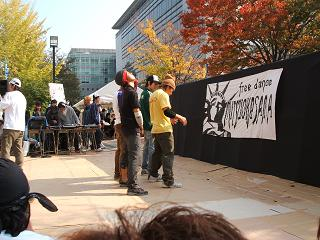
始まる前に手を振った時口パクで俺らに向かって
「やばい。ムリ」
って言ってたけどいざ始まるとしっかり踊ってるじゃん。
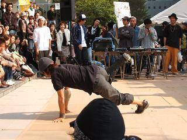
おとといくらいに会った時
「まだ振り決まってないんだけど」
って言ってたけどなんとかなったみたいで。
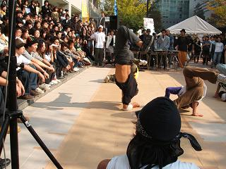
踊りを見てると確かにかっこいい。
逆立ちとかしてる時の顔を見ると確かに
「やばい。ムリ」
って顔になってたりしてた。
素人の俺らから見るとミスもなくしっかり踊れてた。
俺はバイトがあるからってんで
ダンス終わってちょっとしか話せずにすぐ帰ったけど
いつもの１００倍はかっこよかったで、お疲れさん。
今日のかっこよさ：じゃあいつものかっこよさは今日の１００分の１か。
今日の家計簿：
| 学祭で使ったお金 |
２００円 |
| 食料・酒 |
１４４６円 |
| 支出計 |
１６４６円 |
| 総支出 |
１７６８１円 |
まちかね祭〜一日目〜。１１/５
今日から三日間うちの学祭ではキャンパス内に出店が出ます。
つまり今日からが学祭本番、タケユキです。
それで友達と１２時に学校に待ち合わせにしてたんだけど
お互い昨日飲みすぎたせいで起きれず１時集合に変更。
それから出店が出てる通りをうろうろ。
出店やってる友達に会うと、
「おう来てくれたんや。買ってってや〜」
「じゃあひとつもらうわ〜」
チジミ食べながら５０ｍばかり歩く、
「おっ来てたんや。もちろん買ってくやんな？」
「じゃあ一つ買うわ」
白玉ぜんざいを食べながらまた５０ｍほど歩く、
「あっ、３種類あるから全部買ってきや」
「とりあえず１種類で勘弁してください」
たこ焼きもどき（たこの代わりにブタキムチとか入れてるやつ）を
食べた。
友達がやってるとこだっていう時点で断るという選択肢が
許されなくなりなくなります。
友達が俺を見つけた時の笑顔が
「あっ、タケユキが見に来てくれた」
そういう意味の笑顔なのか
「あっ、
カモが来た」
こういう意味の笑顔なのかがいまいち分からなかった。
まあせっかく来たんだからとにかく知ってる人がやってるとこ全部行って
ナンカレーとか焼き鳥とか食べた。
どこもおいしかった。
たこ焼きもどきに至っては結局二つ食べたし。
俺にどんだけ食わす気やっちゅーねん。
それから陶芸部の友達が焼いた陶器も売ってたんで安くしてもらった。
学祭はあと二日あるんで暇な人はぜひ行くべき、
とりあえず行っとくべき。
料理の絵と値段をかわいく描いた看板もった売り子の子が
ひっきりなしにやってきて
お腹いっぱいだったり食べたくなかったりする時は
断るのも大変だけど、
「焼き鳥いりません〜？」
「今お腹いっぱいやねん、ごめんな〜」
「またお願いしま〜す」
こういうやりとりも学祭らしいいいものだと思います、青春ってやつです。
でもかわいい女の子が看板背負ってクレープ売りに来られると
断るのも超大変。無駄に(男としての)良心が痛む。
どこの店も売り子はけっこうかわいくて
その辺分かってやってるんだろうな〜って思って見たら、
一人女の子が近づいてきて、
「じゃがバターいかがですか〜？」
その子の背負ってる看板にはなんと
の二文字。
お前はいったい何を売りたい？
今日の一言：見まごう事なき「豚汁」の文字。
今日の家計簿：
| 学祭で使ったお金 |
２０６０円 |
| 食料 |
１３７０円 |
| 支出計 |
３４３０円 |
| 総支出 |
１６０３５円 |
ってかやべえ金使いすぎ。１１/４
まだ鼻水止まらないんですけど。
なんだかんだで２週間くらい風邪ひきずっています、タケユキです。
今日は学祭のスポーツ大会でサッカーの試合がありました。
試合は朝早かったんでもちろん集合時間も朝早く。
うちのサークルは時間にルーズな人間が多数在籍しています。
サッカーは１１人で行うスポーツです、
一人二人足りなかったら他でカバーするというのはとても大変なスポーツです。
集合時間、集合場所にいたのは
俺を含め６人。
おいおいおいおいおいおい。
これじゃ試合がどうこう以前の問題じゃんか。
そう困ってたけど集合時間が過ぎたあたりからぽつぽつと集まりだすメンバー。
なんとか試合開始までには１１人そろう。
グラウンドに向かいながら対戦相手の話をしていたら
どうやら相手チームは俺たちとは別のサッカーサークルの人たちらしい。
もうむっちゃ無理やんけ。
相手サッカーサークルだってよ。
自分らもサッカーサークルやろっていう突っ込みはなしで。
毎週とか週３とか定期的にサッカーをやってるサークル相手に勝てるものか。
うちのサークルは定期的って言っても半年に一度だぞ？
でも俺らは善戦し、時間内に勝負は決まらずPK戦へ。
そこで残念ながら負けてしまったんだけどみんながんばった。
夜は居酒屋で飲んでバーで飲んで友達んちで飲んで超ぐでんぐでん。
まっすぐ歩くことすらままならず。
そんな状態で家帰ってきてから日記の更新やってる俺ってある意味すごい。
今日の一枚：試合後に写真撮りました。腕組んでるのが俺。
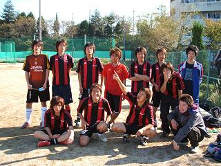
今日の家計簿：
| 「クレイモア」７巻 |
４１０円 |
| 居酒屋 |
３１５０円 |
| バー |
３００円 |
| 雑費 |
１０１２円 |
| 支出計 |
４８７２円 |
| 総支出 |
１２６０５円 |
興味のある人は。１１/３
今日は寝まくって寝まくって、
活動開始したのは１５時になってからでした、タケユキです。
先月
おっさんがなんか芸能人に会える雑誌の企画に応募したらしい。
当選したらしい。
アイドルの追っかけになるなんてそこまで堕ちたか、
そう思ってたらどうやらそうではないみたい。
雑誌主催のフットサル大会に応募してたらしい。
そこにゲストかなにかでアイドル（モデル？）の人も来てたみたい。
その時の写メ送ってもらったんで公開。
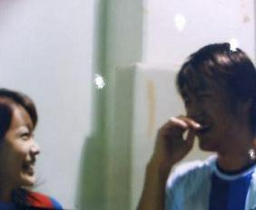
かわいい人と話せてデレデレのおっさん。
ほんとにフットサルやったのか？
ただそのかわいい芸能人見に行っただけじゃないのか？
その辺の事実が分かる「ワールドサッカーダイジェスト」は今月四日、明日発売。
今日のもう一枚：その時の集合写真も送ってきた。
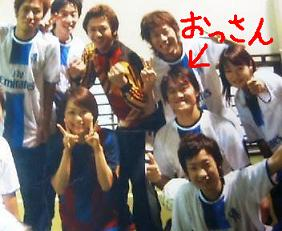
今日の追加予定：明日は
三丁目がいうところの狩り。
今日の家計簿：
| 晩ご飯 |
５５０円 |
| 支出計 |
５５０円 |
| 総支出 |
７７３３円 |
ひとつ増えた。１１/２
明日から８日まで祝日・土日・学祭休み合わせて６連休がスタートです、
バイトの連続出勤も今日でひと段落、
寝るぞーっ！！！タケユキです。
というわけで今日が実質今週最後の学校。
朝９時起床、授業もう始まってるため一限自主休講、
朝風呂入ってたら数時間経過、二限自主休講、
昼からサークルでサッカーをするため学校へ、
なんと
この日以来のサッカーという事実、
実に半年ぶりのサッカーをするサッカーサークル部員。
これほど矛盾した存在があっていいものか。
しかもそれほど昔にサッカーをやっただけなせいか
家にあるはずのスパイクが見当たらない。
玄関はもちろんクローゼットの中にもある気配すらない。
１Kの部屋に住んでて探し物が見つからないとはどういうことだ？
単に部屋が散らかってるだけですすいません１００％俺のせいです。
まあスパイクのことは置いといて集合場所へ。
・・ゲームを始めて１５分で体力の限界を感じた。
無理だって、しんどいって、マジで。
まあ全然運動してなかったらこんなになるんだろう。
ゲームが終わるころにはもう生気のかけらも見当たらない。
ゲーム終わってから地べたにへばりこんで全然動かなくなってた。
そんな死にかけだから３限も自主休講、
夕方からバイトだから風呂入りに家帰って、４限自主休講。
けっきょく自主休講じゃなく自主休校へ。
あ、俺７連休だ。
今日のサークル情報：４日に試合があります。
今日の家計簿：
| 「ONE PIECE」３５巻 |
４１０円 |
| 雑費 |
２１０円 |
| チューハイ・プリン |
３０５円 |
| 支出計 |
９２５円 |
| 総支出 |
７１８３円 |
突き抜けて、塩水。１１/１
「最近さ〜全然家でまともな料理してなくてさ〜、
今日なんかチャーハンとラーメンしか食ってないわ〜」
「俺なんかチャーハンとカラムーチョしか食ってないよ」
それ人が生きる上での栄養足りてなくね？タケユキです。
今週も一日始まりました、今月も一日始まりました。
昨日の日記にも書いたけど今日もバイトで終わる一日。
もうほんとテンションがズーンですよズーン。
さらに昨日薦めた鼻うがい健康法、
湯が鼻を通らないほど詰まってしまってたら効果なし。
その事実に今日気づいてさらにズーンなんですよ、ズーン。
今日の鼻：左がもう完全閉鎖されてます。
今日の家計簿：
| 映画の先売券 |
２６００円 |
| 食料・アイス・酒 |
３３５８円 |
| 雑費 |
３００円 |